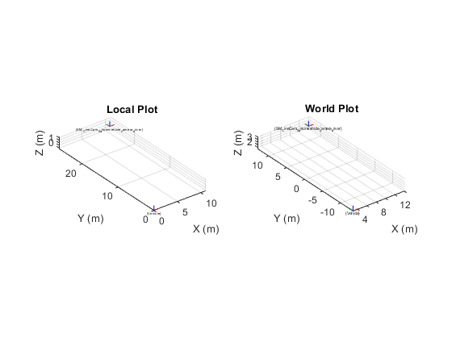
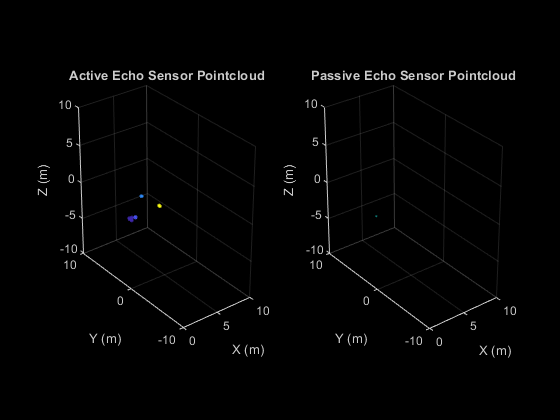
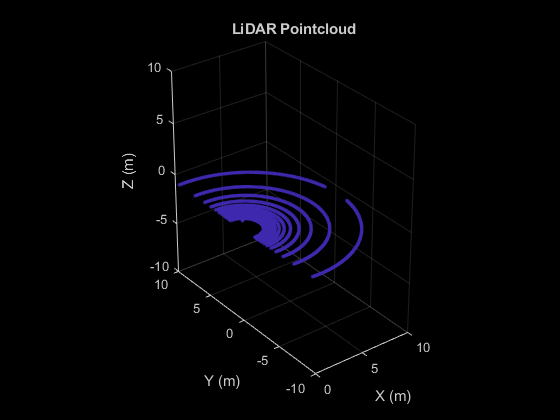
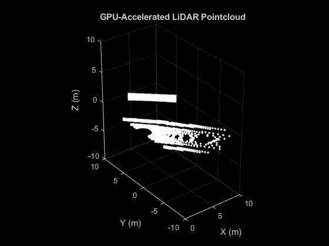
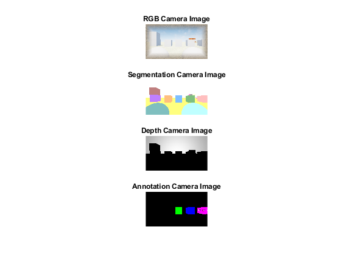
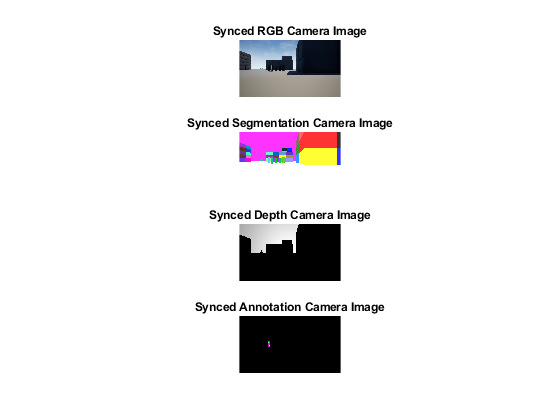

Example
This example will: -Connect to AirSim -Get/set vehicle pose -Get instance segmentation groundtruth table -Get object pose(s) -Get sensor data (imu, echo (active/passive), (gpu)LiDAR, camera (info, rgb, depth, segmentation, annotation))
Do note that the AirSim matlab client has almost all API functions available but not all are listed in this test script. For a full list see the source code fo the AirSimClient class.
Do note the test script requires next to the toolboxes listed in the Prerequisites the following Matlab toolboxes: -Lidar Toolbox -Navigation Toolbox -Robotics System Toolbox -ROS Toolbox -UAV Toolbox
Contents
Setup connection
%Define client vehicle_name = "airsimvehicle"; airSimClient = AirSimClient(IsDrone=false, ApiControl=false, IP="127.0.0.1", port=41451, vehicleName=vehicle_name);
Groundtruth labels
Get groundtruth look-up-table of all objects and their instance segmentation colors for the cameras and GPU LiDAR
groundtruthLUT = airSimClient.getInstanceSegmentationLUT();
Get some poses
All poses are right handed coordinate system X Y Z and orientations are defined as quaternions W X Y Z.
% Get poses of all objects in the scene, this takes a while for large % scene so it is in comment by default poses = airSimClient.getAllObjectPoses(false, false); % Get vehicle pose vehiclePoseLocal = airSimClient.getVehiclePose(); vehiclePoseWorld = airSimClient.getObjectPose(vehicle_name, false); % Get an random object pose or choose if you know the name of one useChosenObject = false; chosenObject = "Cylinder3"; if useChosenObject finalName = chosenObject; else randomIndex = randi(size(groundtruthLUT, 1), 1); randomName = groundtruthLUT.name(randomIndex); finalName = randomName; end objectPoseLocal = airSimClient.getObjectPose(finalName, true); objectPoseWorld = airSimClient.getObjectPose(finalName, false); figure; subplot(1, 2, 1); plotTransforms([vehiclePoseLocal.position; objectPoseLocal.position], [vehiclePoseLocal.orientation; objectPoseLocal.orientation], FrameLabel=["Vehicle"; finalName], AxisLabels="on") axis equal; grid on; xlabel("X (m)") ylabel("Y (m)") zlabel("Z (m)") title("Local Plot") subplot(1, 2, 2); plotTransforms([vehiclePoseWorld.position; objectPoseWorld.position], [vehiclePoseWorld.orientation; objectPoseWorld.orientation], FrameLabel=["Vehicle"; finalName], AxisLabels="on") axis equal; grid on; xlabel("X (m)") ylabel("Y (m)") zlabel("Z (m)") title("World Plot") drawnow % Set vehicle pose airSimClient.setVehiclePose(airSimClient.getVehiclePose().position + [1 1 0], airSimClient.getVehiclePose().orientation)
IMU sensor Data
imuSensorName = "imu";
[imuData, imuTimestamp] = airSimClient.getIMUData(imuSensorName);
Echo sensor data
Example plots passive echo pointcloud and its reflection directions as 3D quivers
echoSensorName = "echo"; enablePassive = true; [activePointCloud, activeData, passivePointCloud, passiveData , echoTimestamp, echoSensorPose] = airSimClient.getEchoData(echoSensorName, enablePassive); figure; subplot(1, 2, 1); if ~isempty(activePointCloud) pcshow(activePointCloud, color="X", MarkerSize=50); else pcshow(pointCloud([0, 0, 0])); end title('Active Echo Sensor Pointcloud') xlabel("X (m)") ylabel("Y (m)") zlabel("Z (m)") xlim([0 10]) ylim([-10 10]) zlim([-10 10]) subplot(1, 2, 2); if ~isempty(passivePointCloud) pcshow(passivePointCloud, color="X", MarkerSize=50); hold on; quiver3(passivePointCloud.Location(:, 1), passivePointCloud.Location(:, 2), passivePointCloud.Location(:, 3),... passivePointCloud.Normal(:, 1), passivePointCloud.Normal(:, 2), passivePointCloud.Normal(:, 3), 2); hold off else pcshow(pointCloud([0, 0, 0])); end title('Passive Echo Sensor Pointcloud') xlabel("X (m)") ylabel("Y (m)") zlabel("Z (m)") xlim([0 10]) ylim([-10 10]) zlim([-10 10]) drawnow
LiDAR sensor data
Example plots lidar pointcloud and getting the groundtruth labels
lidarSensorName = "lidar"; enableLabels = true; [lidarPointCloud, lidarLabels, LidarTimestamp, LidarSensorPose] = airSimClient.getLidarData(lidarSensorName, enableLabels); figure; if ~isempty(lidarPointCloud) pcshow(lidarPointCloud, MarkerSize=50); else pcshow(pointCloud([0, 0, 0])); end title('LiDAR Pointcloud') xlabel("X (m)") ylabel("Y (m)") zlabel("Z (m)") xlim([0 10]) ylim([-10 10]) zlim([-10 10]) drawnow
GPU LiDAR sensor data
Example plots GPU lidar pointcloud with its RGB segmentation colors
gpuLidarSensorName = "gpulidar"; enableLabels = true; [gpuLidarPointCloud, gpuLidarTimestamp, gpuLidarSensorPose] = airSimClient.getGPULidarData(gpuLidarSensorName); figure; if ~isempty(gpuLidarPointCloud) pcshow(gpuLidarPointCloud, MarkerSize=50); else pcshow(pointCloud([0, 0, 0])); end title('GPU-Accelerated LiDAR Pointcloud') xlabel("X (m)") ylabel("Y (m)") zlabel("Z (m)") xlim([0 10]) ylim([-10 10]) zlim([-10 10]) drawnow
Cameras
% Get camera info cameraSensorName = "frontcamera"; [intrinsics, cameraSensorPose] = airSimClient.getCameraInfo(cameraSensorName); % Get single camera images % Get images sequentially cameraSensorName = "front_center"; [rgbImage, rgbCameraIimestamp] = airSimClient.getCameraImage(cameraSensorName, AirSimCameraTypes.Scene); [segmentationImage, segmentationCameraIimestamp] = airSimClient.getCameraImage(cameraSensorName, AirSimCameraTypes.Segmentation); [depthImage, depthCameraIimestamp] = airSimClient.getCameraImage(cameraSensorName, AirSimCameraTypes.DepthPlanar); [annotationImage, annotationCameraIimestamp] = airSimClient.getCameraImage(cameraSensorName, AirSimCameraTypes.Annotation, "TextureTestDirect"); figure; subplot(4, 1, 1); imshow(rgbImage) title("RGB Camera Image") subplot(4, 1, 2); imshow(segmentationImage) title("Segmentation Camera Image") subplot(4, 1, 3); imshow(depthImage ./ max(max(depthImage)).* 255, gray) title("Depth Camera Image") subplot(4, 1, 4); imshow(annotationImage) title("Annotation Camera Image") drawnow % Get synced camera images % By combining the image requests they will be synced % and taken in the same frame cameraSensorName = "front_center"; [images, cameraIimestamp] = airSimClient.getCameraImages(cameraSensorName, ... [AirSimCameraTypes.Scene, AirSimCameraTypes.Segmentation, AirSimCameraTypes.DepthPlanar, AirSimCameraTypes.Annotation], ... ["", "", "", "GreyscaleTest"]); figure; subplot(4, 1, 1); imshow(images{1}) title("Synced RGB Camera Image") subplot(4, 1, 2); imshow(images{2}) title("Synced Segmentation Camera Image") subplot(4, 1, 3); imshow(images{3} ./ max(max(images{3})).* 255, gray) title("Synced Depth Camera Image") subplot(4, 1, 4); imshow(images{4}) title("Synced Annotation Camera Image") drawnow 